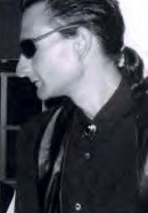
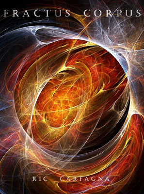

Jester-Knight
Literature
Film
Music
Visual Art
Tributes
Submissions
Links
Contact
Ric Carfagna

Biography
Ric Carfagna is the author of 15 collections of poetry, most recently Null Set and Dakota Journal
published by X-pressed. His poetry has evolved from the early experimental radicalities of his first two books, Confluential Trajectories and Porchcat Nadir, to the unsettling existential mosaics of his current collections, including his ongoing multi-book project Notes On NonExistence.
Ric is the Poetry Review Editor for the E-Journal, Poetic Inhalation. His poems have been published widely in America as well as in Europe and Scandinavia.
Ric’s poetry speaks from a distance,
not the distance of an aloof exterior realm,
but within the vicinity of the heart of humanity;
quarrying through words for an answer,
he seeks to bring to light layers
interred by the shadows of an unconscious awareness,
emerging as it does from an inner need
to trace the labyrinth common to all
who carry the burden of life’s unfolding questions
through to their inevitable end.
Click below for Ric's work
Fractus Corpus

Fractus Corpus 1 - 20 (.pdf)
Fractus Corpus 21 - 40 (.pdf)
Fractus Corpus 41 - 50 (.pdf)
Fractus Corpus 51 - 70 (.pdf)
Nomadic Ontologies
Nomadic Ontologies, Edit 1 (.pdf)
Nomadic Ontologies, Edit 2 (.pdf)
Nomadic Ontologies, Edit 3 (.pdf)
Reviews by Ric Carfagna
Ravi Shankar - Instrumentality (.pdf)
Joey Madia - New Mystic Alchemy (.pdf)
Jacques Roubaud - The form of a city changes faster, alas, than the human heart (.pdf)